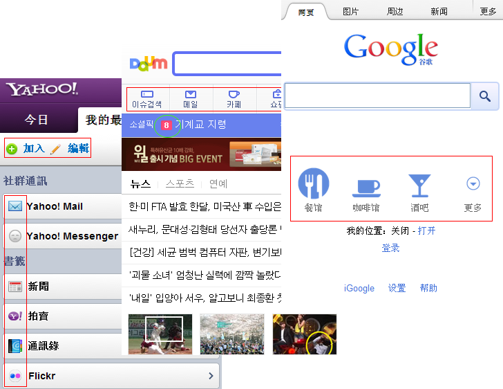
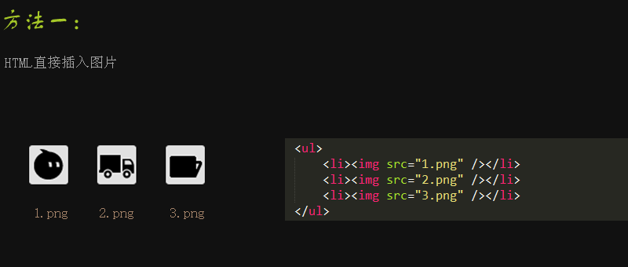
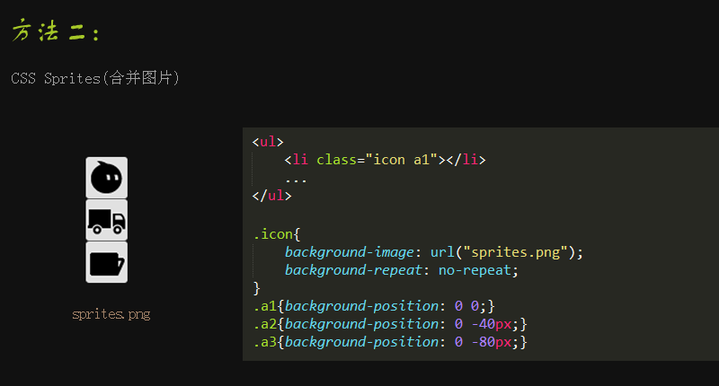
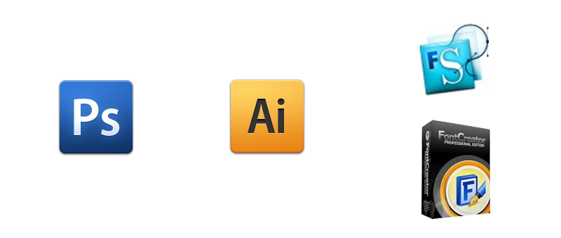
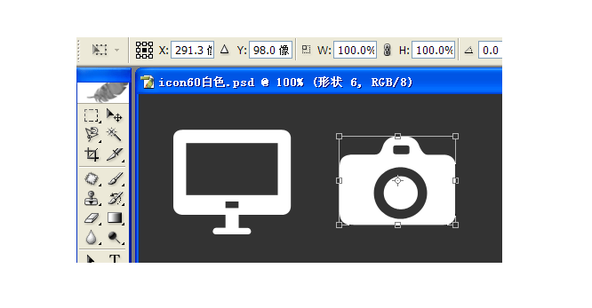
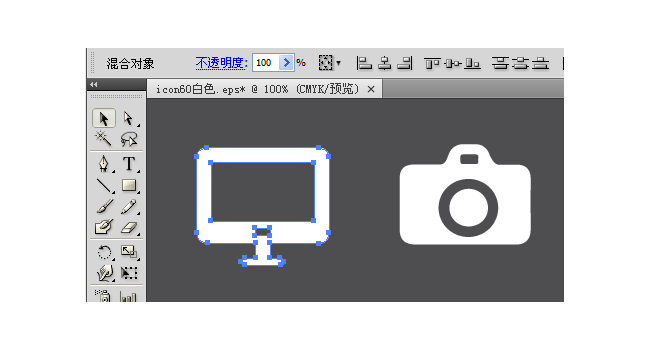
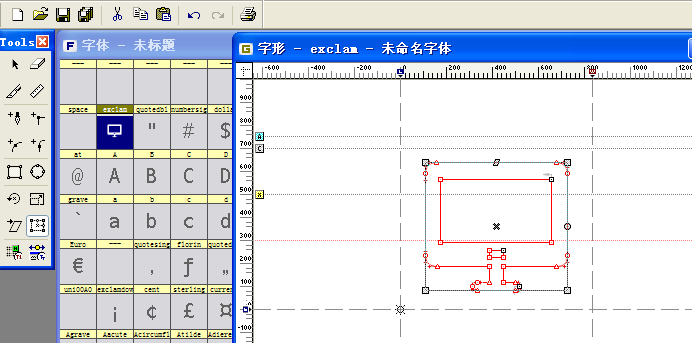
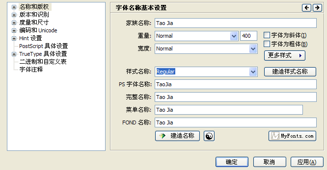
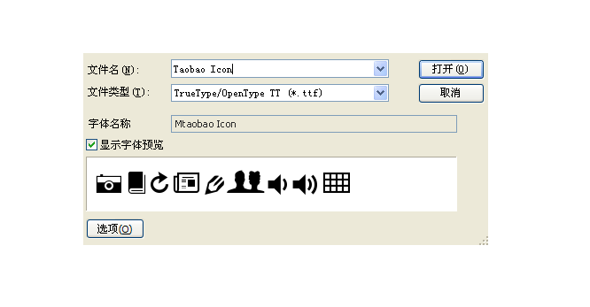
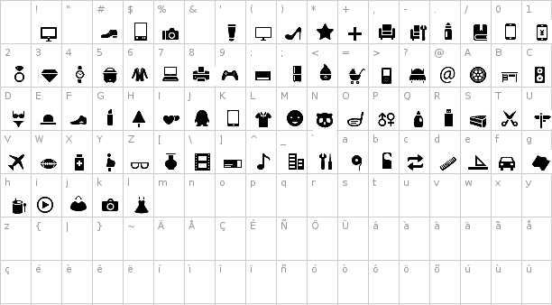

Head First Icon Font
2012-04-16
为什么使用Icon图标？

前端如何处理Icon？


还有其他方法吗？
揭秘Icon Font面纱...
Ⅰ、将icon做成字体有哪些优势？
字体文件小，一般20-50kb
扩展性强，尺寸、颜色可以用css来控制
支持透明，完全兼容IE6
兼容多分辨率，便于做离线存储。
Ⅱ、制作Icon Font需要什么工具？

Ⅲ、制作Icon Font具体步骤

Ⅰ、打开设计稿psd，将其保存为Photoshop eps格式

Ⅱ、Illustrator中打开保存的eps，取消分组并复制所选icon

Ⅲ、FontLab新建字体，粘贴刚才复制的icon对象到某个字符

Ⅳ、文件->字体信息 为字体设置名称、版权等信息

Ⅴ、文件->生成字体 导出字体文件*.ttf，大功告成！

icon字符对照表
Icon Font制作完成，
已经迫不及待在项目中尝试了...
还有一些浏览器的兼容问题...
IE： 只支持.eot格式，IE9开始支持.woff；Firefox： 支持.ttf和.otf，Firefox 3.6+支持.woff；Opera： 支持.ttf、.otf、.svg，Opera 11开始支持.woff；Chrome： 支持.ttf、.otf，Chrome 6+支持woff格式；safari： 支持.ttf、.otf格式字体
iOS、Android对字体格式支持情况
IOS Webkit：4.2+支持.ttf、5.1+开始支持.woff，4.2以下只支持SVG字体。Android Webkit：2.2版本以上支持.ttf格式字体。结论：在不需要兼容低配手机情况下，Mobile Web推荐使用.ttf格式字体。
FontLab不能生成.eot、.woff字体！
如何运用icon字体到页面中？
先了解一下@font-face
利用CSS3实现各种ICON
Q&A
Thank You！